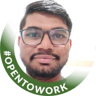

|  | Patel Yashkumar PankajbhaiI am an engineer in Information Technology.I am very eager to learn new things. I like to listen music in free time. I love to code. I am passionate about building websites. I am ambitious and motivation driven about what I do. I am highly organized. I like to keep clean my workspace. |
| Certifications | Institutions Name | Grade |
|---|---|---|
| Bachelor's | Sardar Patel College of Engineering | 8.37 CGPA |
| High School | RPTP Higher Secondary School | 73% Percentile Rank |
| School | English Medium School Bhadran | 94% Percentile Rank |